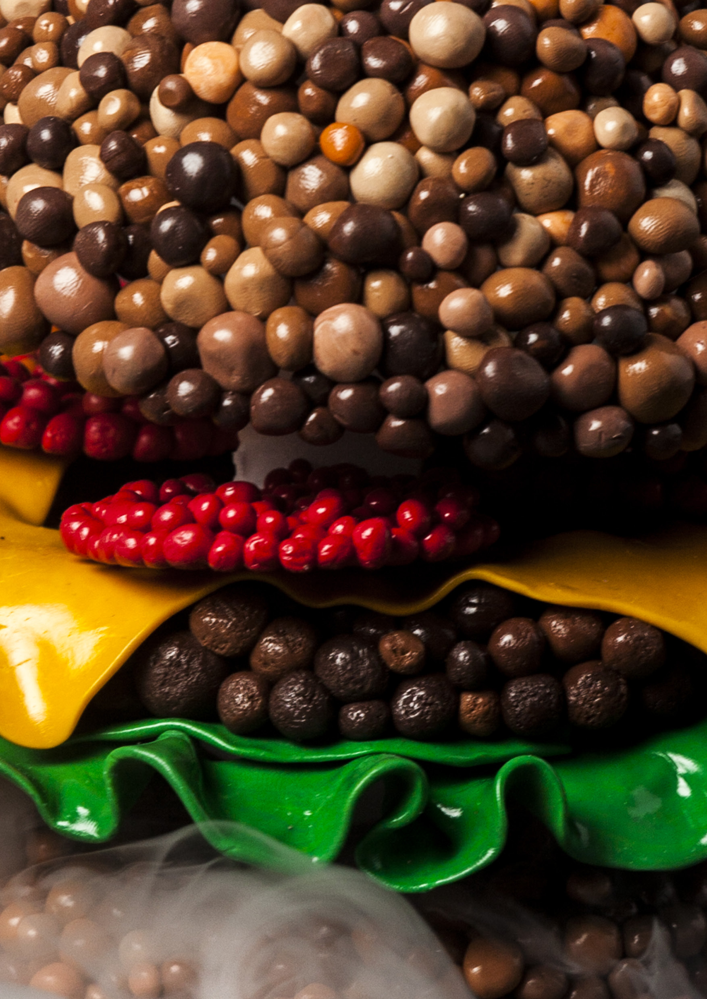
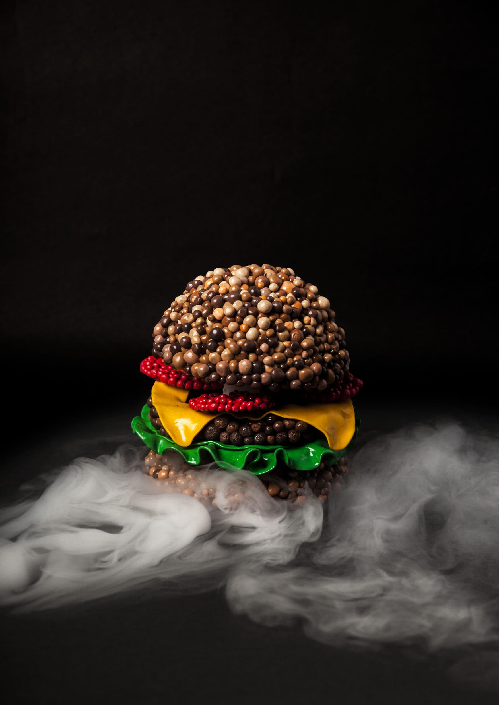
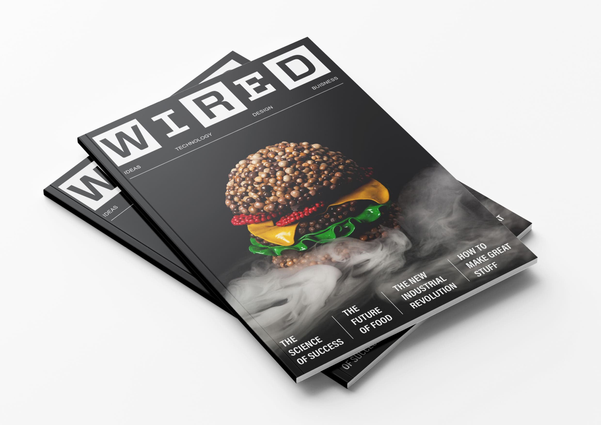
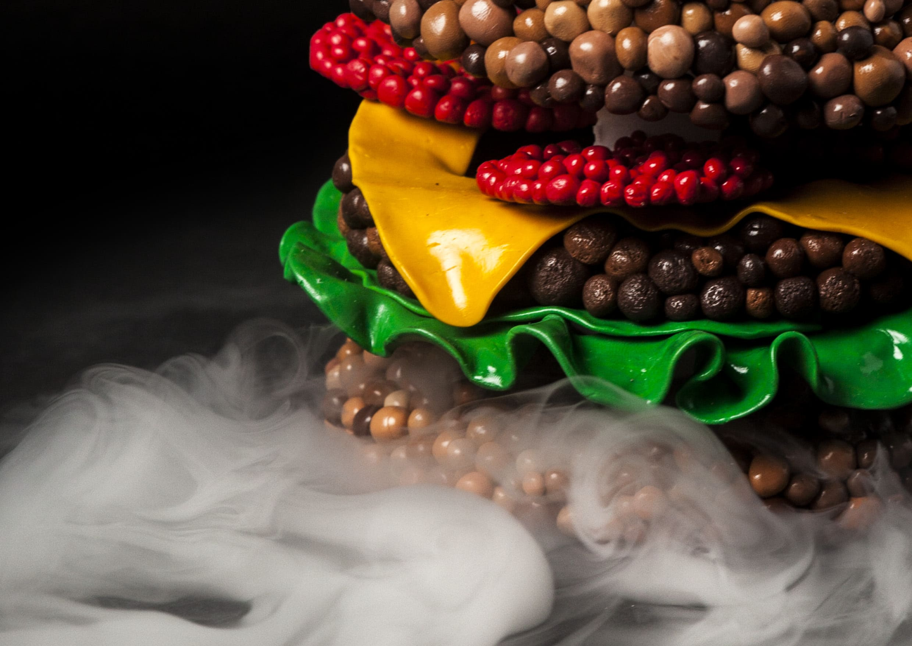

Are you interested in molecular gastronomy? It’s the theme of this special issue of the science magazine Wired. And for the occasion, we’d love to eat a good burger! Want to know our secret? It’s entirely made by us in Fimo clay!
Workshop with Losiento Studio, in collaboration with Morgane Massiani and Margaux Soulacroup.



